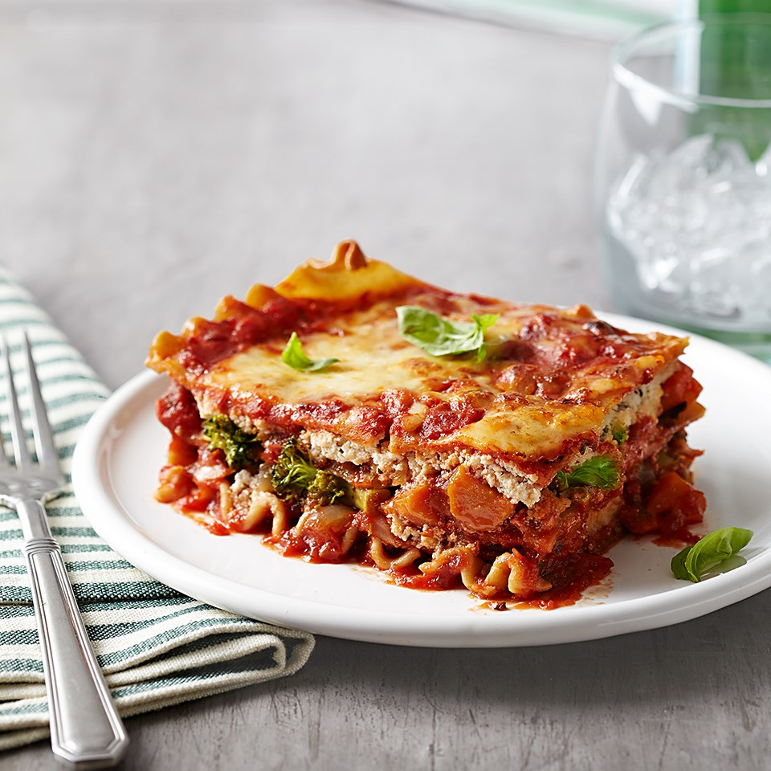

Lasagna

Description
Roasted vegetables add tons of hearty flavor to this easy vegetarian lasagna made with jarred pasta sauce.
It's not super easy or quick to make, but I guarantee it will become your family's favorite!
Give it a try!
Ingredients:
- 8 ounces carrots, halved lengthwise and cut into 2-inch pieces (2 cups)
- 1 ½ cups onion, cut in 1/2-inch thick slices
- 3 tablespoons olive oil
- 4 cloves garlic, minced
- ¼ teaspoon crushed red pepper
- ¼ teaspoon salt
- 4 cups chopped fresh broccoli
- 9 whole grain lasagna noodles
- 1 ½ cups vegan ricotta cheese
- ½ teaspoon Italian seasoning, crushed
- ½ teaspoon freshly ground black pepper
- 1 (24 ounce) jar tomato-basil pasta sauce
- ¼ cup small fresh basil leaves or torn fresh basil leaves (see Tip)
- ¼ cup nutritional yeast
- ½ cup panko or breadcrumbs
Steps
- Preheat oven to 450o F. Combine carrots, onion, olive oil, garlic, crushed red pepper, and salt in a bowl; toss to coat. Spread in a single layer on a 15x10x1-inch baking pan. Bake 25 to 30 minutes or until vegetables are browned and just tender, stirring once halfway through. Cool and coarsely chop. Stir in broccoli.
- Meanwhile, cook lasagna noodles according to package directions, omitting salt and fat.
- In a medium bowl, combine vegan ricotta cheese, Italian seasoning, and black pepper
- Reduce oven temperature to 375 degrees F. Coat a 2-quart rectangular baking dish with cooking spray.
- Spread ½ cup pasta sauce in the bottom of the prepared dish. Arrange 3 noodles over sauce. Top with half of the vegetable mixture, half of vegan ricotta mixture, and ½ cup pasta sauce. Arrange 3 noodles over sauce; top with remaining vegetable mixture, vegan ricotta mixture, ½ cup pasta sauce and remaining 3 noodles. Spread remaining sauce over noodles. Sprinkle with a mixture of nutritional yeast and panko.
- Bake, covered, for 45 minutes. Uncover and bake 10 to 15 minutes more or until golden and bubbly. Let stand 15 to 20 minutes. Sprinkle with fresh basil before serving.
Tips:
Substitute fresh flat-leaf parsley or oregano for the basil.